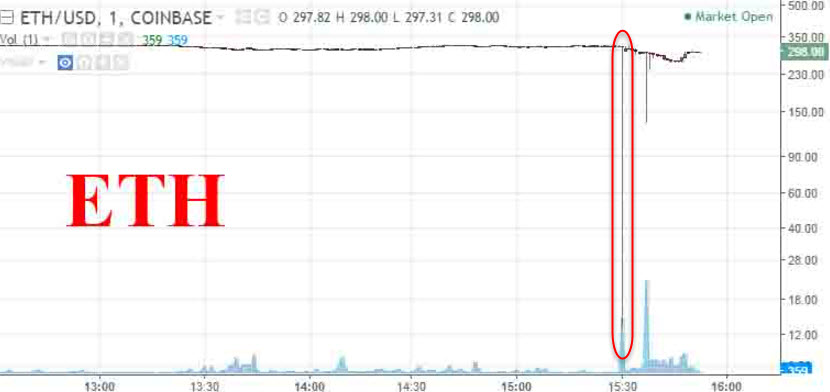

Ethereum crashed from $319 to 10 cents in seconds on one exchange after 'multimillion dollar' trade Ethereum crashed from $319 to 10 cents in seconds on one exchange after 'multimillion dollar' trade 9:21 AM ET Thu, 22 June 2017 | 00:44 the price of ethereum crashed as low as 10 cents from around $319 in about a second on the GDAX cryptocurrency exchange on Wednesday, a move that is being blamed on a "multimillion dollar market sell" order.
Ethereum is an alternative digital currency to bitcoin and had been trading as high as $352 on Wednesday. It has since rebounded from its flash-crash lows to trade to about $325 on the GDAX exchange. According to industry and price tracking website Coinmarketcap, which takes into account the price on several exchanges, ethereum was trading around $338.
Adam White, the vice president of GDAX which is run by U.S. firm Coinbase, posted on the exchange's blog, outlining what took place at around 12:30 p.m. PT on Wednesday. According to White, the multimillion dollar market sell order resulted in a number of orders being filled from $317.81 to $224.48.
As the price continued to fall, another 800 stop loss orders and margin funding liquidations caused ethereum to trade as low as 10 cents.
A stop loss order is a trade that is executed automatically once a security — in this case ethereum — hits a particular price. Margin funding is essentially trading with borrowed funds. Liquidation is when these positions are closed automatically in order to prevent further losses. The knock-on selling effect caused the flash crash on GDAX.
Many on social media criticized GDAX and alleged there was some sort of illegal activity taking place. GDAX denied this.
"Our initial investigations show no indication of wrongdoing or account takeovers. We understand this event can be frustrating for our customers. Our matching engine operated as intended throughout this event and trading with advanced features like margin always carries inherent risk," White said in a blog post.
"We are continuing to conduct a thorough investigation and will keep customers updated with any resulting actions."
White also noted that these trades are final and will not be reversed. The exchange temporarily halted trading of ethereum on Wednesday before restoring the system shortly after
And it was a painful experience for many. On the social forum Reddit, users complained of losing large sums of money from $3,000 to $9,000.
But it also seemed to be a large money making event for some too. On the trading forum StockTwits, user John DeMasie posted a screenshot of trade history around the time of the flash crash. It showed one person had an order in for just over 3,800 ethereum if the price fell to 10 cents on the GDAX exchange. Theoretically this person would have spent $380 to buy these coins, and when the price shot up above $300 again, the trader would be sitting on over $1 million.